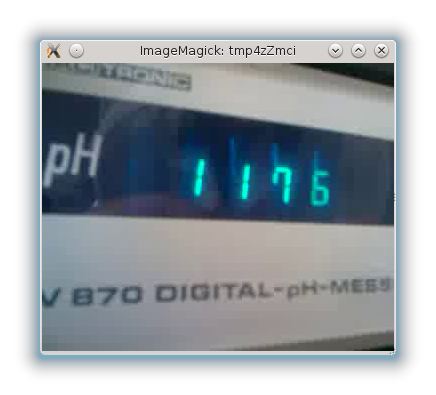
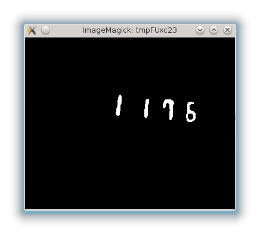

Interim report
Tento report vymezuje téma projektu z hlediska zpracovávaných dat a požadovaných výsledků zpracování, popisuje state-of-the-art v řešené oblasti a podává přehled konkrétních metod předzpracování dat, které budeme při řešení projektu používat.
1. Zadání projektu
Cílem projektu “Rozpoznávání čísel ve videozáznamu” je metodami strojového učení zpracovat dva konkrétní dříve pořízené videozáznamy digitálního displeje měřícího přístroje, aby se umožnilo další počítačové zpracování přístojem naměřených hodnot, zejména grafické znázornění průběhu měřené hodnoty (zobrazené na displeji) v čase.
2. Data
Videozáznamy byly pořízeny ve formátu 3GP (video 352x288 H.263, zvuk 3GP Mono 8 kHz), snímková frekvence 15 snímků za sekundu. Záznamy pořídil Jiří Daněk mobilním telefonem HTC Dream. Video je snímáno “z ruky”, bez použití stativu nebo jiných stabilizačních prostředků. Celkem bylo pořízeno asi 15 minut videa.
3. State-of-the-art
Při klasifikaci nestrukturovaných dat, například textu a obrázků, metodami strojového učení se daji rozlišit následujicí dva přístupy k problematice předzpracování dat. Tou první je manualní extrakce atributů [feature konstruction] s využitím zavedených technik, jako je u textů bag-of-words a u obrázků například SIFT features. Druhý přístup usiluje o co nejvíce automatické získání atributů s pomocí pomocí technik učení bez učitele [unsupervised learning].
V tomto projektu budeme používat pouze metody manualní extrakce. Postupy s využitím učení bez učitele k extrakci atributů jsou v současnosti předmětem intenzivního vědeckého výzkumu, pro úplnost zde tedy popisujeme i tyto postupy a uvádíme k nim i několik příkladů jejich použítí z literatury.
3.1. Manualní extrakce atributů
“The vast majority of all the creative work in the field of Artificial Intelligence was done not by machines, but by people”
Předzpracování a konstrukce atributů se provádí manualně s využítím technik z oblasti zpracování obrazu. Úspěšnost řešení úlohy tímto způsobem závisí zejména na dobrém předzpracování dat. Protože vytvoření atributů pro klasifikaci je úkolem člověka, v angličtině se takové atributy uznačují jako [hand-crafted features].
Ačkoli nektere pokročilé operace mohou takové hrube rozdeleni porusovat, úlohy extrakce atributů z obrazu je možno rozdelit na nasledujici zakladni operace.
předzpracování (prahování, filtrování)
(segmentace)
konstrukce atributů
Takové rozdělení umožňuje experimentovat s různou kombinací metod v každé jednotlivé fázi.
3.1.1. Předzpracování
Možnými operacemi jsou prahováni, rozmazání, nebo operace z do matematicke morfologie. V případě videa zde můžeme uvést digitální stabilizaci obrazu.
3.1.2. Segmentace
Úkolem segmentace je nalezení relevantních částí obrazu pro extrakci atributů pro klasifikaci.
3.1.3. Tvorba atributů
Je možné využít některé zavedené robusní techniky tvorby atributů, například atributy SIFT/HOG nebo SURF. (V aplikacích kde není možné použít SIFT z důvodů platných softwarových patentů na tuto metodu se dá jako příbuzná alternativa použít metoda HOG). Je také možné použít některé méně sofistikované techniky, jako je bitový vektor hodnot všech pixelů obrázku.
3.1.4. Klasifikace
Cílem je klasifikovat segmenty na základě atributů určených v předchozím kroku.
3.2. Unsupervised learning
S poukazem na to, že manualní návrh vhodných atributů je časově náročný a při změné parametrů vstupu je nutné provádět jej opakovaně, při použítí této techniky atributy nekonstruujeme ručně, ale využíváme metod učení bez učitele [unsupervised learning] aplikovaných přímo na surová data. Tento přístup byl v minulosti neprakticky výpočetně náročný, nyní ale bývá využíván stále častěji. Specifickou variantou tohoto postupu je takzvaný Deep Learning.
Použití učení bez učitele blíže popisuje článek [10], který ukazuje, jak tímto způsobem natrénovat atributy pro rozpoznávání ručně psaných číslic, například PSČ na pohlednicích nebo obecně ve formulářích.
3.2.1. Deep Learning
Velice zajímavým prohloubením myšlenky učení se atributů je Deep Learning. Učení bez učitele aplikujeme vícekrát, vždý nad výstupem předchozí metody učíme metodu následující. Z tohoto hlubokého vrstvení pochází název celého přístupu. Obvyklé je využití neuronových sítí. Celá konstrukce potom reflektuje soudobé představy o struktuře lidského mozku jako o hierarchii klasifikátorů. Proces Deep learningu je, poté, co si stanovíme algoritmy a postup tvoření hierarchie, téměř nebo zcela automatický.
Finální klasifikátor se nachází na vrcholu celé hierarchie a jako atributy může využívat buď výstupy přímo pod ním ležící vrstvy, nebo i některých hlubšich vrstev.
Building High-level Features Using Large Scale Unsupervised Learning
“After a training period one neuron in the network had learned to respond strongly to cats.”
Ve studii [9] se autoři pokusili technikou Deep learning vytvořit atributy, které by jim umožnili klasifikovat fotografie přirozených scén z hlediska objektů, které se na nich vyskytují. Učení atributů probíhalo na sadě deseti milionů snímků získaných z videa nahraného na server YouTube. Výsledný systém dosáhl na testovací sadě téměř dvojnásobné úspěšnosti než předchozí nejlepší klasifikační algoritmus. Jedna zajímavost, která zaujala i denní tisk je, že jeden z takto vytvořených atributů přímo koreloval s přítomností nebo nepřítomností kočičí hlavy na vstupním obrázku.
Pro provedení tohoto experimentu bylo zapotřebí použít 16000 počítačů po dobu tří dnů.
3.3. Dříve dosažené výsledky
Problém rozpoznávání znaků (OCR) je známý velmi dlouho a jde ho řešit s vysokou úspěšností. Problém nalezení textu v obrázku se v literatuře označuje jako “text detection” a vývoj v této oblasti probíhá i dnes. Důkazem toho je například ICDAR competition, pravidelně opakovaná soutěž algoritmů pro detekci textu.
Náš problém detekce číslic na displeji je drasticky zjednodušený tím, že nemusíme detekovat libovolný text, ale můžeme se omezit na digitální číslice určité barvy.
Z dostupné literatury jsme vybrali něktéré zajímavé práce na příbuzná témata.
3.3.1 Rozpoznávání dopravních značek omezujících rychlost
K tomuto tématu jsme studovali články [1] a [2]. Článek [1] se zaměřuje na rozpoznávání Norských dopravnich značek, systém popsaný ve [2] je vytvořený pro značky Dánské. Metody používané v článcích se značně překrývají s metodami, které v tomto reportu navrhujeme pro náš projekt.
V článku [1] autoři postupují tak, že se nejprve s pomocí šablony identifikuje červené mezikruží jako charakteristický prvek značky. Následně se provádí OCR na číslicích v takto vyznačené oblasti.
Systém vyvinutý v článku [2] je obecnější a umí rozpoznávat všechny značky, které mají vliv na omezení rychlosti, například začátek a konec dálničního úseku nebo začátek a konec zastavěného území.
Článek [1] pracuje s prostorem barev RGB a použité techniky nejsou samy o sobě příliš zajímavé, ve zdroji [2] se autoři v každém kroku porovnávají vícero metod, a tak třeba prahování zkoušejí provádět v prostorech RGB i HSV, dle pevně naučených prahů i podle dynamicky přizpůsobených prahů dle histogramu.
Pohled do praxe: Tuto funkcionalitu je možné v součastnosti najít u nejlépe vybavených výbavě vlajkových modelů osobních automobilů. Soudobá auta již umějí rozpoznávat vícero druhů značek, nejen rychlostní omezení.
3.3.2. Rozpoznávání registračních značek
Praktické využití: kontrola parkování, kontrola oprávnění k vjezdu do areálu, nebo úsekové měření rychlosti v obcích.
3.3.3. Rozpoznávání textu v realných scénách
Článek [4] je zajímavý hlavně obsáhlým úvodem s odkazy na literaturu, ve kterém se podává přehled a vyzdvihují úspěchy použití metod učení bez učitele pro konstrukci atributů. Články [5,6,7] každý popisují některou z ručně navržených metod pro detekci textu, ať už například podle rovnoměrné tlouštky čar, či jiné charakteristiky, kterou text obvykle vykazuje.
Praktické využití: umožňuje následnou aplikaci OCR na běžné fotografie, je pak možné například strojově číst vývěsní štíty obchodů. Využívá se například v Google StreetView. Zajímavost ohledně Streetview je, že pro rozpoznávání nalezených domovních čísel se nevyužívá OCR, ale technika human computation, kdy se nalezené obrázky domovních čísel předkládají uživatelům jako test CAPTCHA.
3.3.4. Automatizovaný odečet elektroměru
Patent [8] se zabývá zpracováním statických fotografií elektroměrů pro zrychlení a zpřesnění manualního odečtu údajů, což téměř přesně kopíruje téma tohoto projektu.
3.3.5. Seznam literatury
[1] Efficient Recognition of Speed Limit Signs
http://heim.ifi.uio.no/jimtoer/ITSC04_Torresen.pdf
[2] Automated Speed Limit Sign recognition
http://www.vip.aau.dk/wp-content/uploads/2011/12/sign11.pdf
[3] Advanced Intelligent Computing Theories and Applications
Donald C. Wunsch, Daniel S. Levine, ISBN 3540859306
[4] Text Detection And Character Recognition In Scene Images With Unsupervised Feature Learning
http://www.learningace.com/doc/2857414/e28bbaaf886b617095f8907c8a542f5c/textdetectionandcharacterrecognitioninsceneimageswithunsupervisedfeaturelearning
[5] Detecting Text in Natural Scenes with Stroke Width Transform
http://yoni.wexlers.org/papers/2010TextDetection.pdf
https://sites.google.com/site/roboticssaurav/strokewidthnokia
[6] Real-Time Scene Text Localization and Recognition
http://cmp.felk.cvut.cz/~neumalu1/neumann-cvpr2012.pdf
[7] ROBUST TEXT DETECTION IN NATURAL IMAGES WITH EDGE-ENHANCED MAXIMALLY STABLE EXTREMAL REGIONS http://www.stanford.edu/~dmchen/documents/ICIP2011_RobustTextDetection.pdf
[8] Automated meter inspection and reading
US patent číslo 5559894 vydaný dne 24 srpna 1996
[9] Building High-level Features Using Large Scale Unsupervised Learning http://arxiv.org/abs/1112.6209
[10] Sparse Feature Learning for Deep Belief Networks Marc’Aurelio Ranzato1 Y-Lan Boureau2,1 Yann LeCun1
http://books.nips.cc/papers/files/nips20/NIPS2007_1118.pdf
4. Návrh řešení
Námi navrhovaný postup je možno rozdělit do tří fází. Je to jednak nalezení obdélníkových výřezů v obrazu, které obsahují číslice, na což navazuje konstrukce atributů pro klasifikační algoritmus, a ten provede finální klasifikaci každého výřezu, abychom určili, kterou číslici displej zobrazuje.
4.1. Nalezení obdélníkových výřezů
S pomocí programu ImageMagic, sady nástrojů pro úpravu obrázků, jsme na testovacím snímku navrhli sérii transformací, které z obrazu dovolují izolovat jednotlivé číslice. Dalším krokem bude naprogramování těchto transformací v programovacím jazyce Python. Proces je ilustrován na sérii čtyř obrázků.
4.1.1. Neupravený obrázek

4.1.2. Prahování v barevném prostoru HSV
V barevném prostoru HSV, který lépe reflektuje intuitivní lidské představy, nežli běžněji používaný prostor HSV, je možno poměrně dobře specifikovat zelenavý odstín číslic na displeji měřicího přístroje a odlišit tak popředí (na dalším obrázku bíle) od pozadí (černě).
4.1.3. Filtrování
Ačkoli zrovna na tomto obrázku dopadl předchozí krok bezvadně, ukázalo se, že u některých jiných snímků se vyskytují malé zelené oblasti, které nepatří k číslům. Pro jejich odstranění jsme se rozhodli použít operaci z matematické morfologie nazvanou parametrické otevření.

4.1.4. Segmentace
Každá číslice je tvořena souvislou oblastí bílých pixelů. Každou spojenou komponentu [connected components] tedy prohlásíme za jednu číslici, což na následujicím obrázku znázorňuje zelený obdélník kolem každé takové oblasti.

4.2. Tvorba atributů
Před tím, než přístoupíme k vytváření atributů, chceme nalezené obdélníkové oblasti, nejprve přeškálovat na jednotnou velikost 5x7 pixelů. Díky tomu budeme moci vytvářet vektory pevné délky. Jako atributy navrhujeme vyzkoušet
bitový vektor vzniklý zřetězením všech pixelů přeškálované obdélníkové oblasti
vektor přirozených čísel, kde každý z prvků koresponduje s jedním z pixelů na hraně přeškálované obdélníkové oblasti a jeho hodnota představuje počet souvislých pixelů pozadí v tom sloupci, respektive řádku.
4.3. Klasifikace
Pro klasifikaci chceme vyzkoušet alespoň tři algoritmy: Naive Bayes, Decision tree a Nearest Neighbour. Domníváme se, že by mohlo být výhodné, pokud by použitý algoritmus byl schopen ke klasifikaci dodat i míru jistoty, s jakou příklad patří do jednotlivých tříd. Tuto informaci by mohlo být užitečné zkombinovat s informacemi z předcházejicích snímků a s využitím faktu, že číslo na displeji se mění spojitě, tak omezit výskyt chyb a dále vylepšít přesnost rozpoznávání.
Novinky:
[20/05/2013]
Spuštìny webové stránky
[26/05/2013]
Interim report
Související odkazy:
WekaStránky předmětu